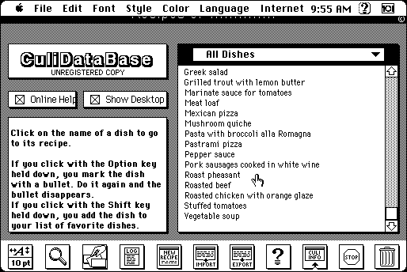

Download
CuliDataBase68K.zip (811K) CuliDataBase 5.9.1 - 68K repackaged into a zipped hfs disk image and checksum file. The disk image can be mounted with Mini vMac.
CuliDataBase68K.cpt.hqx (1.2M) CuliDataBase 5.9.1 - 68K in the original format.
copyright: Tonbrand
mod date: Mar 17, 2003
license: shareware
last known url
(gone)
A “recipe management tool”. Requires “System 7.5.3 or higher”.

If you find these downloads useful, please consider helping the Gryphel Project, which hosts them.
Here are the md5 checksums for the downloads, signed with Gryphel Key 5:
--------- GRY SIGNED TEXT --------- fe9f5d269513e5c6d0c986a455cfaccd CuliDataBase68K.zip 8c5714ef51a6fa231b93da68db004254 CuliDataBase68K.cpt.hqx ------- BEGIN GRY SIGNATURE ------- Gry/4Xa8CFcUzxdN/B6+JPGBkx6n3ZOxHDJfOvVFePWoUNen1tE84H+6h/Z/i9Up SkQascgNR9z4ZMwBrPx8XtitvQBA4tqaiEcvxFS42oZlGgatnDZwEmVx6ZkJNWBi xFqDMTmKFR/3t1EQwtCQ5t6rgye/SPGzzi0v6kHB+MxvJKHgojuEaEbE6y5qCa5c -------- END GRY SIGNATURE --------